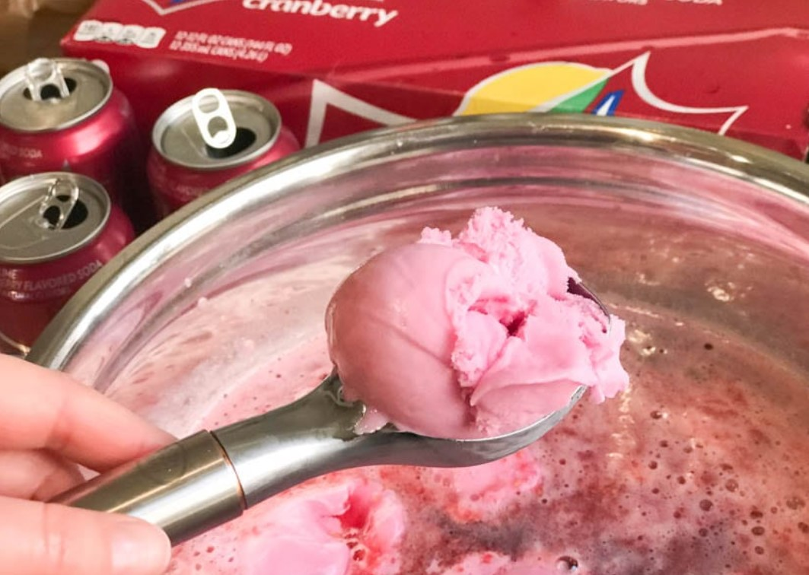

A fagylalt
A fagylalt, röviden fagyi általában tejből vagy tejporból, cukorból, tojásból, különféle ízesítőkből (csokoládé, vanília, gyümölcsök vagy mesterséges ízesítőanyagok) és adalékanyagokból készült hideg édesség. Házilag is elkészíthető, üvegkehelyből vagy ostyából készült fagylalttölcsérből is fogyasztható, díszítésként gyümölcsöt, ostyát, különféle gyümölcsszirupokat, csokoládét és csokoládészirupot stb. használnak. Léteznek zöldségfagylaltok is. Általában gombócokban szolgálják fel, egy gombóc tömege körülbelül 4 dkg. Csomagolt formája a jégkrém.
A fagylaltok története
A fagylaltot valószínűleg először a kínaiak ismerték, mintegy ötezer évvel ezelőtt már hóból, tejből és gyümölcsökből kevert jeges édességet fogyasztottak a tehetősebbek. Valószínűleg egyiptomi közvetítéssel került a földközi-tengeri országokba. A történelem sok híres alakja volt fagylaltkedvelő, így például Nagy Sándor a katonáinak szolgáltatta fel a jeges édességet élénkítő hatása miatt, Hippokratész betegeinek ajánlotta gyógyírként, Nero császár több száz kilométerről is képes volt jeget hozatni a különleges édesség elkészítéséhez. Rómában igen kedvelt finomság volt a gazdagabbak számára. Marco Polo kínai utazásról visszatérve több fagylaltreceptet is magával hozott. Az első, fagylaltot árusító kávéház valószínűleg Párizsban nyitott meg, ám a fagylalt addig nem terjedhetett el széles körben, amíg az ipari forradalom a konyhatechnológiát is el nem érte, hiszen a fagylalt előállítása, és főképpen folyamatos hűtése nagy kihívás elé állította a készítőket és drágává is tette a terméket. A 19. század végére már a legtöbb magára valamit is adó kávéházban lehetett kapni fagylaltot. Amerikába az 1700-as évek végén jutott el a fagylalt receptje. Miután 1904-ben Charles E. Miches feltalálta a tölcsért, a fagylalt hordozhatóvá vált, növelve népszerűségét. 1923-ban Harry Burt szabadalmaztatta a „jégkrém pálcikán” elnevezéssel forgalomba kerülő, csomagolt fagylaltját. Magyarországra a fagylalt osztrák közvetítéssel került a 18. században, és hamar kedveltté vált, az 1900-as évek elején már minden szakácskönyvben szerepelt fagylaltrecept. Akkoriban még leginkább a gyerekeknek ajánlották, bár voltak már olyan receptek is, amelyekben bort és pezsgőt is adtak a fagylalthoz, ezzel leginkább a férfiakat vonzva az édességhez. Simai Kristóf XVIII. század végén, Körmöcbányán lejegyzett, kéziratos szakácskönyvében több mint tízféle fagylaltrecept szerepel (néhány közülük "aludt" gyümölcsként, például "aludt meggy", mások fagylalt néven, például "fagylalt kajszibarack" vagy "fagylalt csukoládé"), a piros gyümölcsökből (meggy, földieper) vörösborral, a világos húsúakból (citrom, barack) "jó fejér borral" készítették az édességet.
Üzletek, ahol kapható
Puncsos fagylalt szinte mindenhol kapható: boltokban vagy fagylaltozókban, de akár magunk is elkészíthetjük a fagylaltot.
Egy helyet mégis megemlítenénk, az egyik kedvenc budapesti fagyizónkat a Pálmai cukrászdát, ahol a nagyszerű fagylaltok mellett, ízletes sütemények várnak az odalátogatókra.
Pár hozzászólás az oldalunkra látogatóktól
|
Jóska Bácsi Remek fagylalt! Gyakran szoktam enni. Az említett cukrászda pedig csodás! |
|
Kovács István Csodálatos fagylalt a puncs, én nagyon szeretem. Szerintem mazsolával a legfinomabb. |
|
Tisza Szabolcs A mi családunk gyakran jár a Pálmaiba! A gyerekek nagyon szeretik a sütiket, és a finom fagylaltokat. |